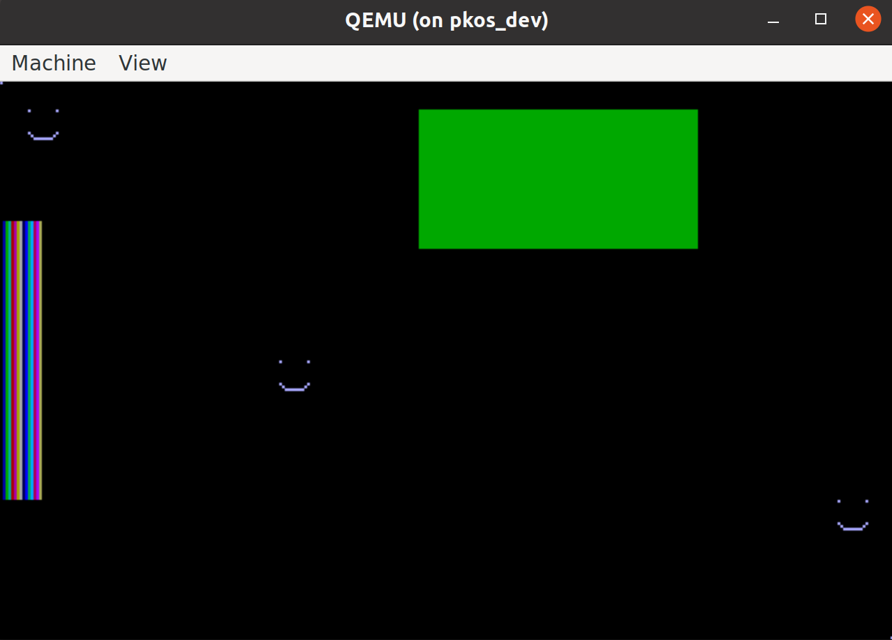

OS15: Writing a Simple VGA Driver (Bare-Metal Graphics)
Our OS just got a lot more colorful. In this post, we figure out how to draw on the screen by switching to VGA mode and manually editing the video memory.
Thanks to Scott Spitler for suggesting this topic.
Timestamps
- 0:00 Intro
- 0:35 Demo (Emulated)
- 1:04 Demo (Real hardware)
- 2:04 VGA Background
- 2:34 QEMU Hardware
- 3:27 VGA Hardware
- 4:52 Setting the Graphics Mode
- 5:57 CODE WALKTHROUGH
- 9:28 Stuck in VGA Mode
- 11:30 Other lessons learned
- 12:17 Outro
Steps to Reproduce
-
Clone the repo:
git clone https://github.com/pagekeysolutions/pkos -
Enter the repo:
cd pkos -
Check out the code snapshot for this post:
git checkout vid/015 -
Enable X connections:
xhost local:root -
Run the OS on QEMU:
docker-compose up
Code
Background
VGA stands for Video Graphics Array [1]. Designed for use with CRT monitors, this old-fashioned video display chipset uses an analog signal. It has been replaced by DVI, or Digital Video Interface [2]. As it turns out, the HDMI standard is just DVI with better color support and audio bundled into the same (smaller) connector [3].
QEMU Hardware
I thought it may be helpful to look into what hardware is being simulated in our beloved i386 QEMU emulator. Thankfully, the man page for qemu-system-i386 tells us exactly what to expect. For VGA, emulator uses the "Cirrus CLGD 5446 PCI VGA card or dummy VGA card with Bochs VESA extensions" [4]. This card connects via the PCI bus [5]. It seems to be old enough that it's hard to purchase anywhere. I am wondering how modern computers, like the laptop I've tried this OS out on in OS10, support VGA mode for x86. I can't seem to find any sources on it, but I thought that I read somewhere (maybe on the OSDev Wiki) that the external VGA chipsets were replaced with a smaller version included directly on the motherboard.
VGA Hardware
As always, the OS Dev Wiki has our back on this topic. Their page on VGA hardware greets me with an encouraging quote:
While the VGA chip is quite a simple piece of hardware ... it is possibly one of the most complicated devices to program for
Wonderful! However, it goes on to mention that there are many shortcuts you can take to make it easier, and it's still a good place to get your start developing video drivers [6]. With this in mind, I found some code in the public domain that I was able to make heavy use of to get something working, even if that something isn't the most elegant graphics code ever written. The OS Dev post [6] goes into great depth about which ports are used to control VGA. It seems that a combination of I/O ports are used to program the chipset into the right mode, and then you can use memory-mapped I/O once everything is set up. The code that I "borrowed" took care of the hard part of writing very specific values to VGA I/O ports, and then I was able to quite simply modify the right memory locations to draw on the screen.
One other tidbit that I learned from [6] is that VGA uses a "sequencer," among other devices in its rendering pipeline (if you could call it that). The sequencer is connected to the VGA memory space, reading it and generating colors that are fed to subsequent stages. Also, it's worth noting that there are 4 planes of VGA memory, each 64 KB in size, for a total of 256 KB.
Settings the Graphics Mode (without the BIOS)
How do you set the graphics mode in protected mode? The sage answer comes again from OSDev [7]:
You don't. Graphics programming is fun, but graphics are hardly essential for an OS. Don't get side-tracked
In fact, it's recommended that you avoid getting too deep into this topic unless you have "more than one life to waste" [8]. Apparently, you can make VGA work without the BIOS and still get some low-resolution graphics working, but to move beyond it, you'll hit some serious barriers. Graphics cards would each, separately require their own graphics driver implementation, and there often isn't sufficient documentation on these cards [8], meaning that you'd be reverse engineering it. That being said, at some point far down the line, I'm sure there's a way to obtain implementations of graphics drivers for popular cards and compile them specifically for our OS. But this is all besides the point - let's jump into the actual code of writing the VGA driver.
Writing the Code
The code that helped me get this working was found at [9]. It's an actual example of techniques for changing the graphics mode without the BIOS. The file itself is huge, and I made no effort to build or run it. Instead, I searched for relevant code snippets that I could use in PKOS. I found write_regs to be a key function. This, paired with a character array named g_320x200x256, representing register values required to enter 320x200 VGA resolution with a color-depth of 256, allowed me to change the graphics mode. I added a command to kernel.c so that whenever you type vga, it runs the vga_test() function in vga.c, which in turn runs write_regs(g_320x200x256). When we do this, our text-based interface goes away, and we see something cool!

Beautiful! The coolest part of this is that we seem to be unintentionally visualizing a section of memory as VGA. The little dots of yellow and stripes of gray must have had some other meaning to the computer before we entered this mode, though I'm not sure what. Maybe the buffer for our text interface that just disappeared is represented here.
Our next step is to figure out how to clear the screen. Again, I borrow some code from [9], modifying it to compile with our OS. Specifically, I got rid of the far keyword - I wasn't sure what this was, and neither was our compiler! This gave us the following function to plot a pixel:
void vga_plot_pixel(int x, int y, unsigned short color) {
unsigned short offset = x + 320 * y;
unsigned char *VGA = (unsigned char*) VGA_ADDRESS;
VGA[offset] = color;
}
We simply calculate the address of the color we'd like to update based on x and y, and then change it in memory! I originally had the wrong address for VGA_ADDRESS, and so this code didn't seem to do anything. The correct value is 0xA0000.
We're now free to clear the screen by plotting color 0 (black) on every pixel from 0,0 to 320,200. From that point on, we can have some fun with our vga_plot_pixel function. We're basically free to draw whatever we want! As for me, I drew some happy faces, a rectangle, and a pallete of colors 0x0 through 0xF.

While we apparently have 256 colors available in this mode, I did not explore past color 0xF.
We're Stuck in VGA Mode
Unfortunately, I was not able to find a way out of this mode. I left my various unsuccessful attempts on the vga-text-mode branch in the repo. Though [9] provides g_80x25_text register values, writing this with write_regs when the user hits ESC was not enough. The actual code also writes 4096-byte font into a specific place in virtual memory. Unfortunately, this makes use of external dependencies to calculate, and I wasn't able to get it to work. Depending on your compiler, this would either be a memcpy, include some variables from dos.h, or something like that. Since we're running on bare-metal, we don't have dos.h and we'd have to roll our own memcpy. I took a quick-and-dirty attempt at memcpy:
// Famous last words - how hard can memcpy be
void memcpy(void *dest, const void* src, int n) {
for (int i = 0; i < n; i++) {
*(int*)dest = ((int*)src)[i];
}
}
Sadly, this didn't seem to help, so I gave up on it for now. The only way out of this mode is a reboot!
Other Lessons Learned
I was having trouble getting into the debugger, so I added a script for debugging named scripts/docker_run_debug which allows easy access to the existing debugging functionality with QEMU and GDB. It was poking around in memory and checking values that made me realize I had the wrong VGA address.
I also found out about how global variables work in C. Apparently, you should declare the global as extern in your header file, and then actually give it a value in your implementation file. Otherwise, you'll get yelled at for having multiple definitions of the same variable, even if you use header guards [10].
Speaking of which, I added header guards! Without these lovely #ifndef __HEADER_H, #define __HEADER_H, #endif combos, you'll get all sorts of errors for mutliple definitions of the same variable or function.
References
[1] https://www.britannica.com/technology/VGA
[2] https://computer.howstuffworks.com/monitor3.htm
[3] https://www.toptenreviews.com/how-hdmi-cables-work
[4] https://manpages.debian.org/stretch/qemu-system-x86/qemu-system-i386.1.en.html
[5] http://www.vgamuseum.info/index.php/cpu/item/147-cirrus-logic-cl-gd5446
[6] https://wiki.osdev.org/VGA_Hardware
[7] https://files.osdev.org/mirrors/geezer/osd/graphics/index.htm
[8] https://wiki.osdev.org/How_do_I_set_a_graphics_mode
[9] https://files.osdev.org/mirrors/geezer/osd/graphics/modes.c
[10] https://stackoverflow.com/questions/8201944/multiple-definition-and-header-only-libraries